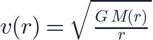
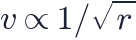
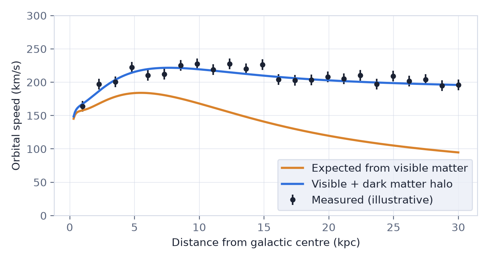

In this lesson you will learn
|
Missing mass
Astronomers can weigh matter in two independent ways: by counting the light it emits, or by measuring its gravitational effects. Since the 1930s these two methods have disagreed. The difference is attributed to dark matter: matter that does not emit, absorb or reflect light but does exert gravity.
Clue 1: galaxy clusters (1933)
The Swiss astronomer Fritz Zwicky measured the speeds of galaxies in the Coma cluster. They move so fast that the cluster should fly apart, unless its total mass is far larger than the mass of its visible galaxies. He called the missing component dunkle Materie: dark matter.
Today we also see hot X-ray emitting gas between cluster galaxies. The gas contains more mass than the galaxies, but even together they make up only about 15% of the mass needed to hold the cluster together.
Clue 2: rotation curves (1970s)
In the 1970s Vera Rubin and Kent Ford measured how fast stars and gas orbit in spiral galaxies at different distances from the centre. Radio astronomers extended these rotation curves far beyond the visible disk using hydrogen gas.
From lesson L0.4, a star orbiting at radius  has speed
has speed

where is the mass inside the orbit. Most of the visible stars sit in the inner part of a galaxy. Beyond it, should hardly grow, so the speed should fall as

, like the planets in the Solar System.
Rotation curves stay flat Observed rotation speeds stay roughly constant far beyond the visible disk.
A constant |
Try it: Galaxy Rotation Curve Pick a real galaxy from the SPARC list (NGC 3198 is the classic case), build it from a bulge and disk, and see how far the curve falls short before you add a dark matter halo. |
Clue 3: gravitational lensing
General relativity predicts that mass bends light (gravitational lensing). Massive galaxy clusters distort the images of background galaxies into arcs and even multiple images. The amount of distortion measures the total mass of the cluster, visible or not. Lensing confirms that clusters contain five to six times more mass than all their ordinary matter.
The Bullet Cluster The Bullet Cluster (1E 0657-558) consists of two galaxy clusters that collided about 150 million years ago. Their hot gas, which holds most of the ordinary matter, collided and slowed down in the middle (seen in X-rays). But lensing shows that most of the mass passed straight through, together with the galaxies. The mass is not where most of the ordinary matter is: strong evidence for a separate, weakly interacting dark component. |
Clue 4: the cosmic microwave background and structure
The pattern of hot and cold spots in the CMB (lesson L4.4) depends on how much ordinary matter and how much total matter the universe contains. Planck finds
so dark matter makes up about 84% of all matter. The same answer comes from Big Bang nucleosynthesis (lesson L4.3), which independently fixes the amount of ordinary (baryonic) matter. Without dark matter, galaxies would not have had enough time to form from the tiny early fluctuations.
What could it be?
Dark matter is not simply ordinary matter that is hard to see:
- Nucleosynthesis and the CMB limit ordinary matter to about 5% of the critical density.
- Dim stars, planets and gas clouds would absorb or emit some light; searches found far too few.
- Black holes formed from stars would require too much ordinary matter.
Leading candidates are new particles that interact through gravity and perhaps very weakly otherwise: WIMPs (weakly interacting massive particles), axions, or others. Underground detectors, particle colliders and telescopes are searching, so far without a confirmed detection. Lesson L3.6 follows the hunt in detail.
Could gravity be wrong instead? Some physicists propose modifying gravity rather than adding new matter (for example MOND). Such theories can fit individual rotation curves but struggle to explain clusters, the Bullet Cluster and the CMB together. Most cosmologists therefore favour dark matter, but the question remains open. |
Remember this
|